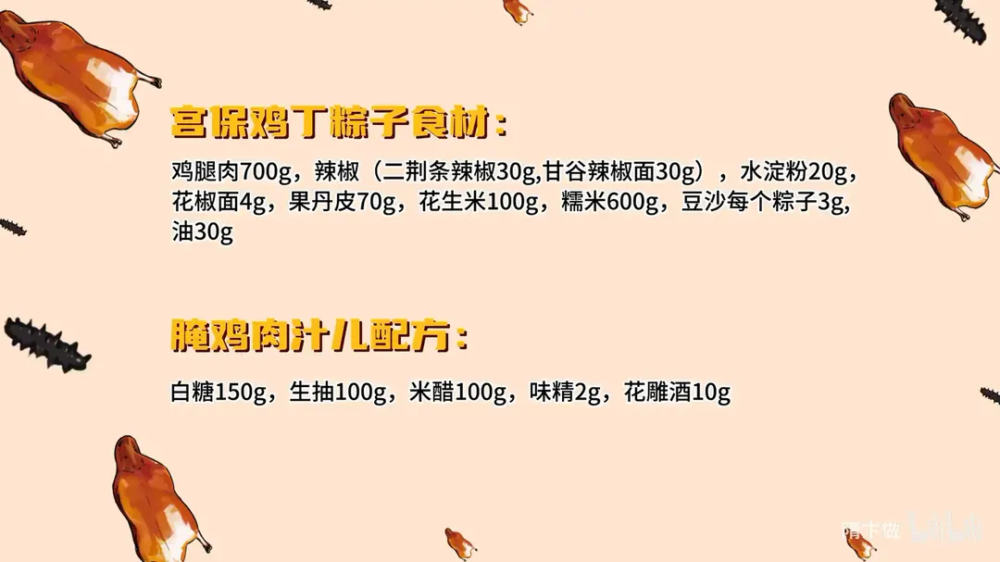
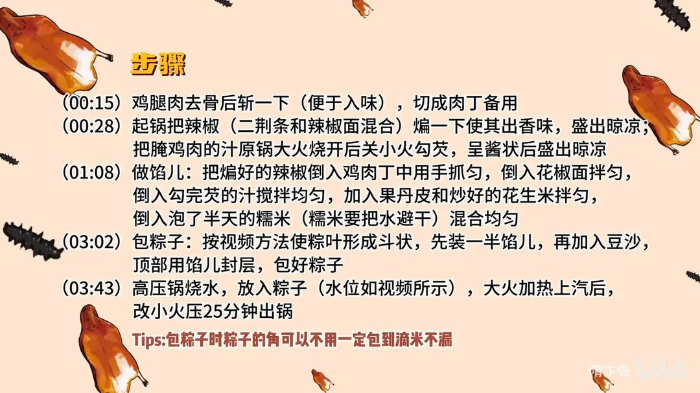

宫保鸡丁豆沙粽
隋卞一做。鸡腿肉 700g 去骨斩丁，二荆条 30g 配甘谷辣椒面 30g 先煸香；白糖 150g、生抽 100g、米醋 100g 熬汁勾芡，拌入果丹皮、花生米和糯米 600g 包成豆沙粽，上汽后小火压 25 分钟。
原视频：https://www.bilibili.com/video/BV1hw4m1S7mL
食材
鸡腿肉、糯米 等 15 样
| 类别 | 用料 | 用量 |
|---|---|---|
| 主料 | 鸡腿肉 | 700g |
| 主料 | 糯米 | 600g |
| 辅料 | 二荆条辣椒 | 30g |
| 辅料 | 甘谷辣椒面 | 30g |
| 辅料 | 水淀粉 | 20g |
| 辅料 | 花椒面 | 4g |
| 辅料 | 果丹皮 | 70g |
| 辅料 | 花生米 | 100g |
| 辅料 | 豆沙 | 每个粽子 3g |
| 调料 | 油 | 30g |
| 腌鸡肉汁儿 | 白糖 | 150g |
| 腌鸡肉汁儿 | 生抽 | 100g |
| 腌鸡肉汁儿 | 米醋 | 100g |
| 腌鸡肉汁儿 | 味精 | 2g |
| 腌鸡肉汁儿 | 花雕酒 | 10g |
步骤
- 切肉丁：鸡腿肉去骨，先用刀斩一下便于入味，再切成肉丁备用。
- 煸辣椒、勾汁：起锅把二荆条和辣椒面混合煸一下，煸出香味后盛出晾凉；腌鸡肉的汁在原锅大火烧开，转小火勾芡，呈酱状后盛出晾凉。
- 做馅儿：煸好的辣椒倒入鸡肉丁中，用手抓匀；倒入花椒面拌匀，再倒入勾完芡的汁搅匀；加入果丹皮和炒好的花生米拌匀；最后倒入泡了半天、沥干水的糯米，混合均匀。
- 包粽子：粽叶折成斗状，先装一半馅儿，中间放入豆沙，顶部再用馅儿封层，包好粽子。
- 高压锅压：高压锅烧水，放入粽子，大火加热到上汽后改小火，压 25 分钟出锅。
小贴士
- 包粽子时粽子的角不必一定包到滴水不漏，糯米涨开后自然封住。
- 糯米要泡半天，拌馅前把水沥干，否则馅儿太湿不好包。
讲解要点
难度：★★★★☆（难在包粽子，馅太湿会漏、绳捆不紧就散）
为什么这么做
- 二荆条和辣椒面两种辣椒搭配：二荆条出香、辣椒面上色，单用一种不是香味不够就是颜色不够。
- 辣椒先煸过再拌进生鸡肉：煸过的辣椒香味才出得来，生辣椒面拌进去只有生辣味。
- 腌肉汁先勾芡、晾凉再拌馅：汁收成酱状才裹得住鸡肉丁；不勾芡汁会渗进糯米，蒸出来鸡肉没味。
- 用果丹皮补酸：加热时醋会挥发，果丹皮煮化后带酸，还能在软糯米里留一点跳跃的口感。
- 糯米泡半天、拌前控干水：泡透的米压 25 分钟正好熟；水不控干馅太湿，包不住也容易夹生。
- 豆沙只放中间一层：豆沙在中心，甜味压不住宫保味，辣也不那么燥。
- 上汽后小火 25 分钟、关火自然泄气：米已经泡过，不用猛火；泄气的过程就是闷泡，米更糯更拉丝。
容易翻车
- 糯米没泡透或水没控干，蒸出来夹生，或者馅太湿包不住。
- 腌肉汁不勾芡就拌，汁水全渗进米里，鸡肉没味。
- 豆沙放太多、铺满整个粽子，甜味盖过宫保味。
- 高压锅一直大火压，米烂成糊、鸡肉变柴。
- 粽叶角露缝太大、绳没捆住，煮的时候散在锅里。
原片尾卡


原片文案
AI 字幕校准稿
你们吃粽子吃咸的还是吃甜的呢？这个在互联网上争吵了十多年的问题，今天给你终结了——宫保鸡丁豆沙粽。一个都别跑啊，都给我看完了。
首先选鸡肉。宫保鸡丁吧，你得有鸡肉切丁。鸡肉切完了，咱们把那个辣椒稍微煸一下。这个辣椒我做了两种：一种是炒过的二荆条，然后给它弄碎；还有一种是市场买的辣椒面，买的辣椒面颜色稍微有点红，二荆条辣椒是比较香，两个要搭配一下，炒一下，就为了让它出香味。
然后把我们腌肉的汁勾个芡，就刚才那锅就行了。这汁的比例你不用记，一会儿回来给你打个片尾。大火烧开，热了之后勾芡，炒的汁成这种酱状就可以了，稍微晾一下。
煸好的辣椒倒进去，拌匀了之后把花椒面倒进去，然后把勾完芡的那个汁儿加进去。在加热过程当中，汁里面的醋会挥发，我得补点酸味，用什么呢？果丹皮。然后把炒好的花生米一加进去。
这个我们是泡了半天的糯米，这里边一定要把糯米的水给它控干，跟馅拌一起。嘿，看着就不赖，这些蒸米饭也不会难吃。懒得从头做到这步，就直接把粽叶给铺上面，铺一层，下面铺一层就可以蒸了，就当个糯米饭吃。
开始包。粽叶分层对折，然后他就成了一个斗，往里边把甜馅装进去。先装一半馅，然后中间放上豆沙，上面再盖上，盖了帽了。对折，摁下去，把绳捆上。捆的方法咱就不拘一格了，这角稍微露点缝是没事的，只要你让绳在这粽子上捆着，别掉下去就行，五花大绑的就这样就行了。
高压锅里做水，把粽子放进去。我们这米是泡过的，所以里边的水没过粽子的一半；您要是干米没泡过的，那水估计得要多一点，因为稀的多。大火上汽改小火 25 分钟。
到点了关火。在家里面不着急吃，就让自然等它把气泄了之后再开盖，它有一个闷泡的过程，更加的糯，拉丝儿。
来了，我太期待这个事情。非常之好吃，这味道比我想象的好吃。就不用跟大家多说了，用两种辣椒的那种香味都出来了。然后中间的豆沙又让这个辣变得没有那么燥，给这个辣给它揉下来了。
里面那个果丹皮因为一煮它都化了，增加了一点点那种稍微跳跃的口感——吃到那个米的时候是没问题的，就你嚼到那个果丹皮，它会碰一下，好像一个很跳跃的口感，酸筋儿的。而且这个鸡肉咱们是煮的，会特别特别嫩。真好吃，非常非常的好吃。我觉得不是端午节自己也能在家做着吃，回家试试吧，好了，再见，拜拜。